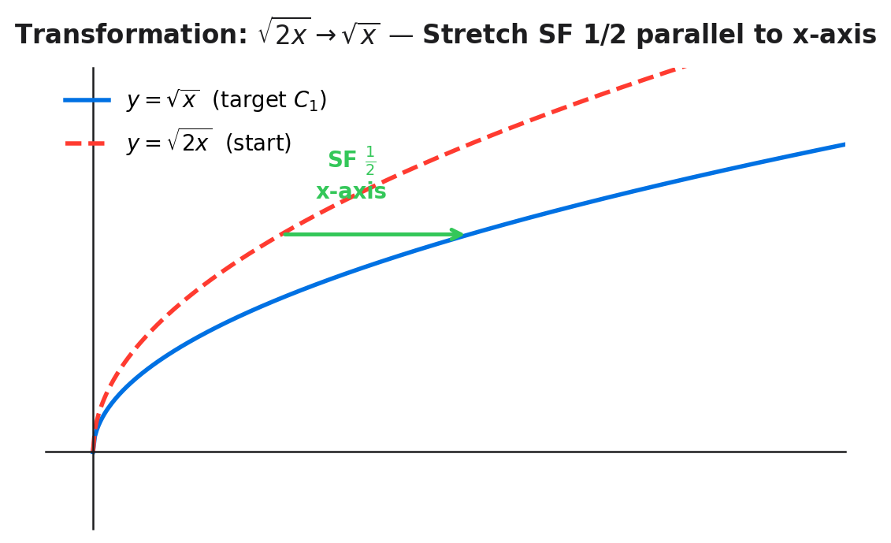
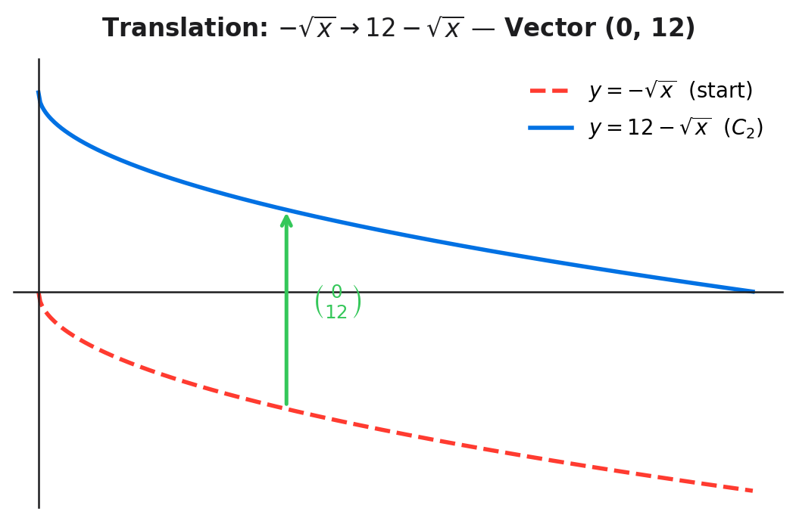
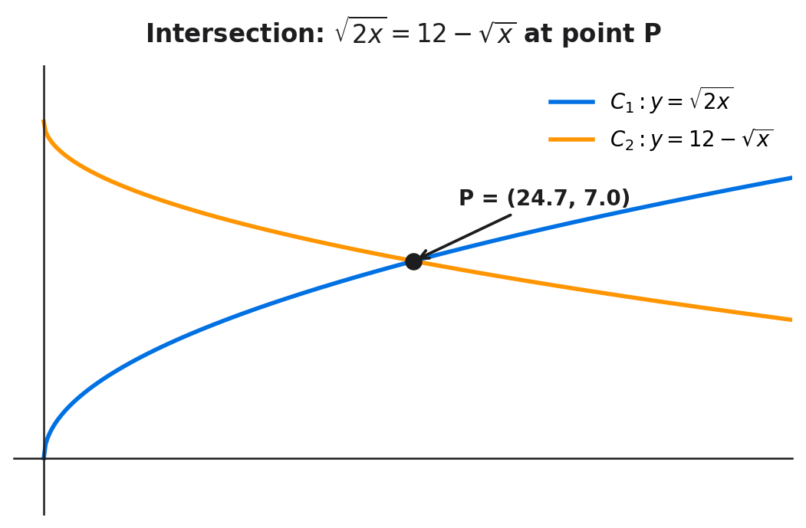
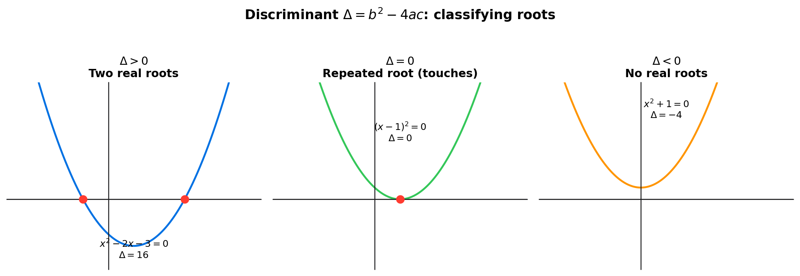

P1 with Harry — 7 Jun 2026
Multi-step flashcards · Image-occlusion style · Cover the grey boxes and redo
P1 Pure 1
7 questions
Multi-step
Topics: function transformations, intersections, exact values, quadratics & cubics, stretch, translation, rationalise denominator, conjugate, surds, repeated root, turning point, discriminant.
How to use: Click each card to open. Cover the grey "Work" boxes and try to reproduce each step before revealing. Aim to complete all 7 in under 15 minutes.
Diagrams





-
Q1 — Transformation: stretch SF 1/2 (y=√(2x) → y=√x)
PNG
Identify f(2x), apply SF=1/a rule, write mark-winning answer. [2 marks]
-
Q2 — Transformation: translation vector (0,12)
PNG
Express END in terms of START, identify f(x)+12 as vertical translation. [2 marks]
-
Q3 — Show that: √x = 12(√2−1)
PNG
Split surd, factor out √x, rationalise denominator with conjugate. [3 marks]
-
Q4 — Exact coordinates of P
PNG
Square result for x, substitute √x for y. Exact = no decimals. [3 marks]
-
Q5 — Quadratic: find f(x) from roots + turning point
PNG
Factored form kx(x−4), sub turning point, solve for k. [3 marks]
-
Q6 — Cubic: find g(x) from root types
PNG
Cuts=simple root, meets=repeated root. Evaluate factors separately. [3 marks]
-
Q7 — Intersection of quadratic and cubic
PNG
Set f(x)=g(x), factor out x(x−4), select Q1 solution. [4 marks]
Also see: LLM Flashcards for this lesson — 43 Q&A cards covering the same topics.